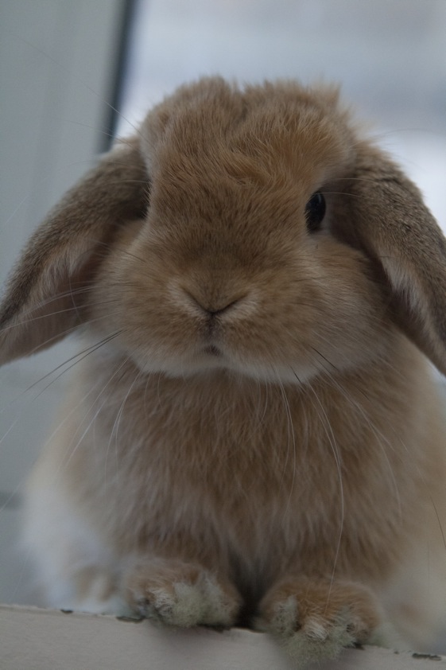
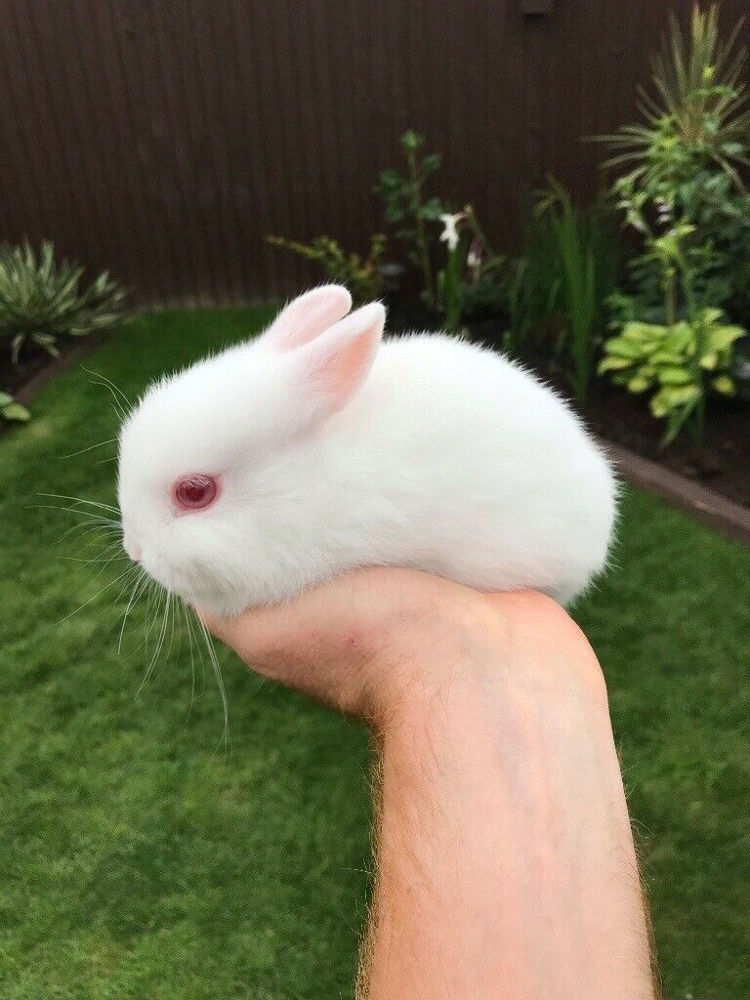

"Rabbits are like human beings in many ways. One of these is certainly their staunch ability to withstand disaster and to let the stream of their life carry them along, past reaches of terror and loss"
- Richard Adams, Watership Down
About us

Monsieur Bunchkin Hop

Madame Blossom Hop
Hi, my name's Bunchie and I love grapes!
I founded The Watson Bunny Sanctuary with my mum and wife eight years ago. Since then we've taken in over six hundred bunnies and given them all a cosy home. Come and visit any time!
M-m-m-my name is Blossom and I get s-s-scared real easily.
I do the admin for the sanctuary, so I don't have to go outside. I love helping other buns to live happy, fulfilling lives because I was rescued myself.